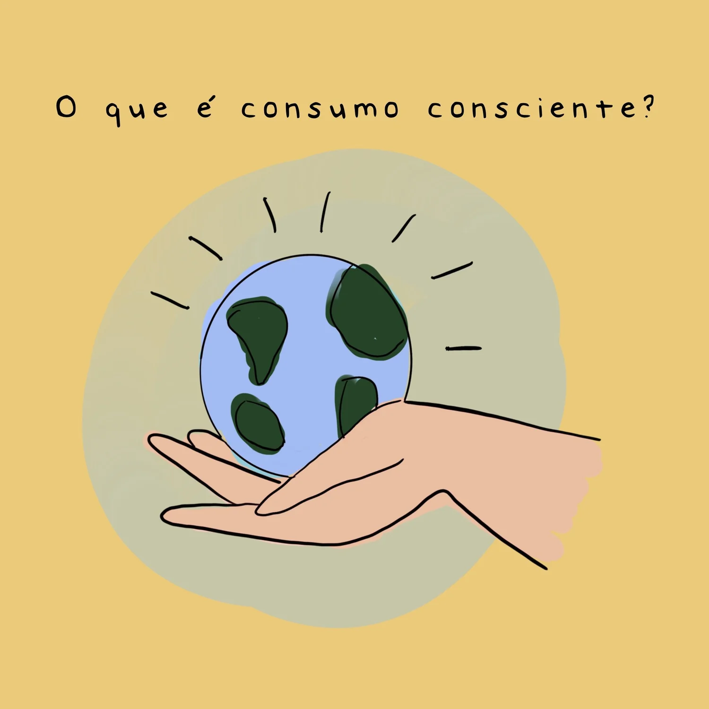

Consumo Consciente
O consumo consciente (ou consumo sustentável) é o ato de comprar e utilizar bens e serviços levando em consideração os impactos ambientais, sociais e econômicos de cada escolha.
Significa consumir melhor, e não necessariamente menos. Cada compra tem uma consequência para o planeta e para a sociedade.

Evita desperdício de dinheiro e reduz contas de água, energia e manutenção.
Valoriza empresas justas, combate trabalho infantil e apoia o comércio local.
Reduz lixo, poluição e preserva recursos naturais como água, florestas e minérios.
Avaliar se realmente precisamos do produto antes de comprar.
Dizer não a itens descartáveis e empresas irresponsáveis.
Consumir menos e evitar desperdícios.
Dar nova vida aos objetos e consertar o que for possível.
Separar corretamente os resíduos para reinserção na cadeia produtiva.
O consumidor consciente pressiona o mercado, forçando as indústrias a adotarem práticas mais sustentáveis.